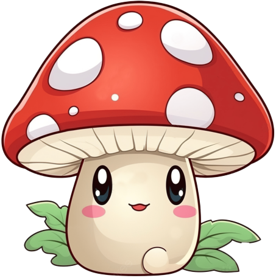
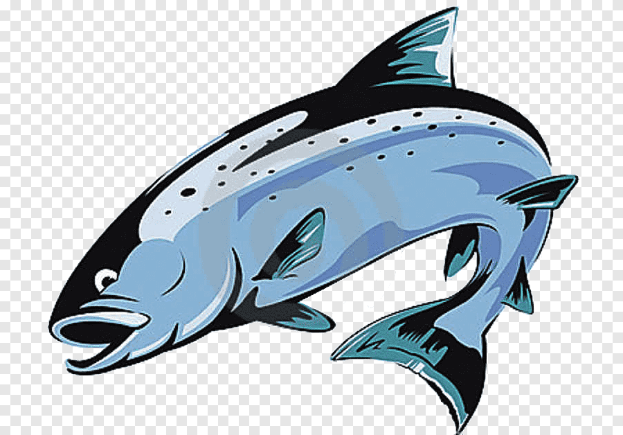
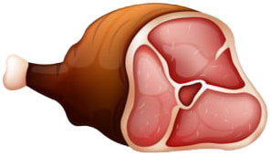
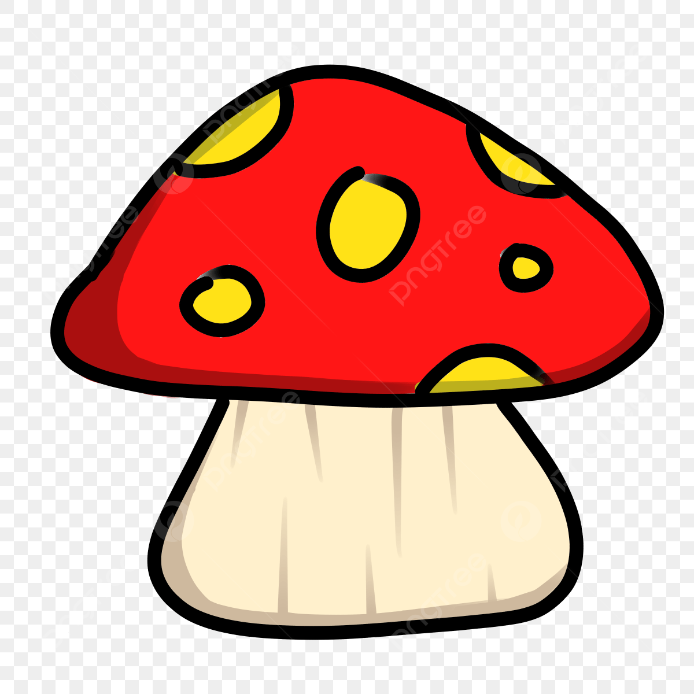
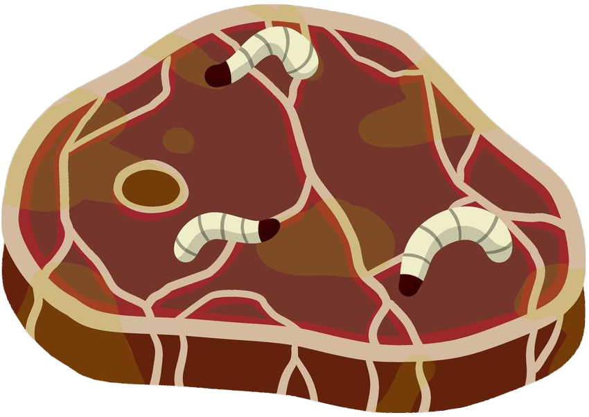
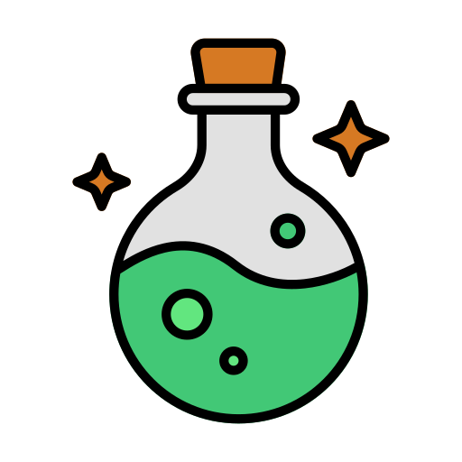

Règles du Jeu "Wolf's Hunt"
Objectif :
Le but du jeu est de guider un loup à travers un environnement forestier pour qu'il puisse se nourrir tout en évitant les dangers. Vous devez également faire attention à un ours qui rôde, mangeant la nourriture et les soins, et infligeant des dégâts au loup en cas de collision.
Mécanique de Jeu :
Déplacement :
- Utilisez les touches de direction (flèches) pour déplacer le loup sur l'écran.
- Le loup peut se déplacer dans toutes les directions : haut, bas, gauche et droite.
- L'ours se déplace automatiquement et plus rapidement sur la carte.
Collecte de Nourriture :
- La nourriture apparaît aléatoirement sur l'écran.
- La nourriture saine augmente la santé du loup.   
- Les aliments toxiques réduisent la santé du loup.  
- Les aliments de soin réduisent l'empoisonnement du loup et lui rendent de la santé. 
- L'ours peut également manger de la nourriture et des soins, les retirant de la carte.
Ours : 
- L'ours se déplace aléatoirement sur la carte.
- Si l'ours entre en collision avec le loup, il lui inflige des dégâts.
- L'ours peut manger la nourriture et les soins avant que le loup n'y parvienne, rendant ces éléments indisponibles.
Nourriture Saine :
- Les aliments sains augmentent la jauge de santé du loup.
- Le loup doit consommer autant de nourriture saine que possible pour maintenir sa santé.
Aliments Toxiques :
- Les aliments toxiques augmentent la jauge d'empoisonnement du loup.
- Si le loup mange un aliment toxique, il doit se purger pour éviter de perdre trop de santé.
Herbes pour la Purge :
- Les herbes apparaissent aléatoirement sur l'écran.
- Si le loup mange un aliment toxique, il doit se déplacer vers une herbe pour se purger.
- La consommation d'herbes annule l'effet toxique et restaure 10 points de santé.
Jauge de Santé :
- La jauge de santé du loup est affichée en haut de l'écran.
- Le jeu commence avec la jauge de santé à 200 points.
- Si la jauge de santé atteint 0, le jeu est terminé.
Score :
- Le score est basé sur la quantité de nourriture saine, toxique et de soin consommée.
- Chaque nourriture consommée ajoute des points au score total.
- Un tableau de score est affiché à la fin du jeu.
Instructions :
- Déplacez le loup en utilisant les touches de direction.
- Cherchez et mangez de la nourriture saine pour maintenir et augmenter la santé du loup.
- Évitez les aliments toxiques ou, si ingérés, déplacez-vous rapidement vers les herbes pour vous purger.
- Survivez aussi longtemps que possible tout en évitant l'ours et en maintenant la jauge de santé au-dessus de 0.
Fin de Partie :
- La partie se termine lorsque la jauge de santé du loup atteint 0.
- Le score final est affiché, et vous pouvez choisir de recommencer le jeu ou de quitter.
Conseils :
- Soyez attentif à l'ours qui se déplace rapidement et peut vous infliger des dégâts en cas de collision.
- Utilisez les herbes efficacement pour gérer les effets toxiques.
- Planifiez vos mouvements pour maximiser la collecte de nourriture saine tout en évitant les dangers.
Amusez-vous et bonne chasse !
Santé : 200
Nourriture : 400
Malade : 0